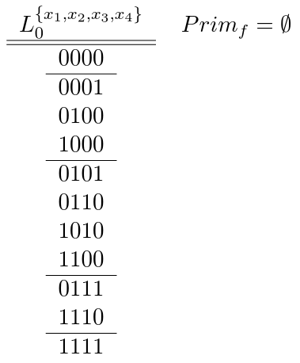
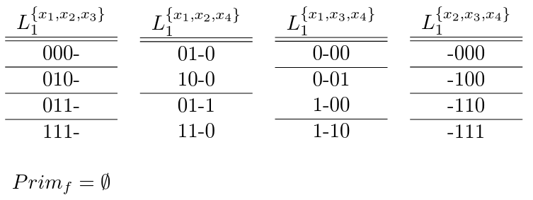
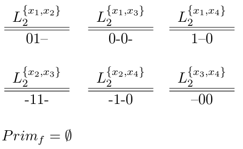
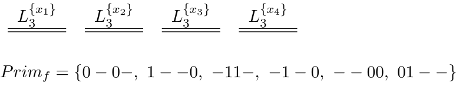
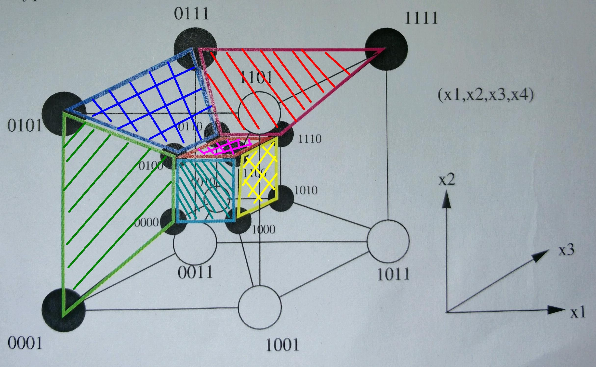
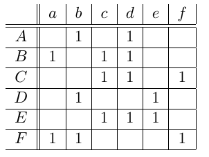

<!doctype html>
<html lang="en">
    <head>
        <meta charset="utf-8">
        <title>reveal-md</title>
        <link rel="stylesheet" href="css/reveal.css">
        <link rel="stylesheet" href="css/theme/black.css" id="theme">
        <!-- For syntax highlighting -->
        <link rel="stylesheet" href="lib/css/zenburn.css">

        <!-- If the query includes 'print-pdf', use the PDF print sheet -->
        <script>
          document.write( '<link rel="stylesheet" href="css/print/' + ( window.location.search.match( /print-pdf/gi ) ? 'pdf' : 'paper' ) + '.css" type="text/css" media="print">' );
        </script>
    </head>
    <body>

        <div class="reveal">
            <div class="slides"><section  data-markdown><script type="text/template"># Übungsblatt 5

<small>by Simon Selg, Danny Stoll</small>
</script></section><section  data-markdown><script type="text/template">
## Gliederung

- [Organisatorisches](/exc05.md#/2)
- [Allgemeines](/exc05.md#/3)
- Aufgaben
	- [Aufgabe 1](/exc05.md#/4)
	- [Aufgabe 2](/exc05.md#/5)
	- [Aufgabe 3](/exc05.md#/6)
	- [Aufgabe 4](/exc05.md#/7)
- [Blatt 6](/exc06.md#/8)

</script></section><section ><section data-markdown><script type="text/template">
## Organisatorisches
</script></section><section data-markdown><script type="text/template">
### Anwesenheit

</script></section></section><section ><section data-markdown><script type="text/template">
## Allgemeines


</script></section><section data-markdown><script type="text/template">
### Blatt 5 Statistiken

- $\varnothing_{Punkte} \approx 11.6$
- $\sigma_{Punkte} \approx 2.6$
</script></section><section data-markdown><script type="text/template">
### Klausur Relevanz
</script></section><section data-markdown><script type="text/template">
### Erste Aufgabe

- [Aufgabe 1](/exc05.md#/4)
- [Aufgabe 2](/exc05.md#/5)
- [Aufgabe 3](/exc05.md#/6)
- [Aufgabe 4](/exc05.md#/7)
- [Blatt 6](/exc06.md#/8)
</script></section></section><section ><section data-markdown><script type="text/template">
## Behauptung

$kDNF(f)$ ist minimal
</script></section><section data-markdown><script type="text/template">
### $f: \mathbb{B}^3 \mapsto \mathbb{B}$

<style type="text/css">
.tg  {border-collapse:collapse;border-spacing:0;border-color:#999;}
.tg td{font-family:Arial, sans-serif;font-size:14px;padding:10px 5px;border-style:solid;border-width:1px;overflow:hidden;word-break:normal;border-color:#999;color:#444;background-color:#F7FDFA;}
.tg th{font-family:Arial, sans-serif;font-size:14px;font-weight:normal;padding:10px 5px;border-style:solid;border-width:1px;overflow:hidden;word-break:normal;border-color:#999;color:#fff;background-color:#26ADE4;}
.tg .tg-kogi{font-size:20px;background-color:#32cb00}
.tg .tg-peaf{font-size:20px}
</style>
<table class="tg">
  <tr>
    <th class="tg-peaf">x</th>
    <th class="tg-peaf">y</th>
    <th class="tg-peaf">z</th>
    <th class="tg-peaf">f</th>
  </tr>
  <tr>
    <td class="tg-peaf">0</td>
    <td class="tg-peaf">0</td>
    <td class="tg-peaf">0</td>
    <td class="tg-kogi">0</td>
  </tr>
  <tr>
    <td class="tg-peaf">0</td>
    <td class="tg-peaf">0</td>
    <td class="tg-peaf">1</td>
    <td class="tg-kogi">1</td>
  </tr>
  <tr>
    <td class="tg-peaf">0</td>
    <td class="tg-peaf">1</td>
    <td class="tg-peaf">0</td>
    <td class="tg-kogi">0</td>
  </tr>
  <tr>
    <td class="tg-peaf">0</td>
    <td class="tg-peaf">1</td>
    <td class="tg-peaf">1</td>
    <td class="tg-kogi">0</td>
  </tr>
  <tr>
    <td class="tg-peaf">1</td>
    <td class="tg-peaf">0</td>
    <td class="tg-peaf">0</td>
    <td class="tg-kogi">0</td>
  </tr>
  <tr>
    <td class="tg-peaf">1</td>
    <td class="tg-peaf">0</td>
    <td class="tg-peaf">1</td>
    <td class="tg-kogi">0</td>
  </tr>
  <tr>
    <td class="tg-peaf">1</td>
    <td class="tg-peaf">1</td>
    <td class="tg-peaf">0</td>
    <td class="tg-kogi">1</td>
  </tr>
  <tr>
    <td class="tg-peaf">1</td>
    <td class="tg-peaf">1</td>
    <td class="tg-peaf">1</td>
    <td class="tg-kogi">1</td>
  </tr>
</table>

$$
\begin{align}
	ON(f) &= \left\\{000,110,111\right\\}
\end{align}
$$
</script></section><section data-markdown><script type="text/template">
### $kDNF(f)$

<div style="height: 40px;"></div>

\begin{align}
	ON(f) &= \left\\{000,110,111\right\\}\\\\
	kDNF(f) &= \overline{x} \cdot \overline{y} \cdot z + x \cdot y \cdot \overline{z} + x \cdot y \cdot z
\end{align}
</script></section><section data-markdown><script type="text/template">
### Konstruktion $p$

<div style="height: 20px;"></div>

\begin{align}
	kDNF(f) &= \overline{x} \cdot \overline{y} \cdot z + x \cdot y \cdot \overline{z} + x \cdot y \cdot z\\\\
	p &:= \overline{x} \cdot \overline{y} \cdot z + x \cdot y
\end{align}

<div style="height: 10px;"></div>

$p$ ist äquivalent zu $kDNF(f)$
</script></section><section data-markdown><script type="text/template">
### Widerspruch

<div style="height: 40px;"></div>

- $\text{cost}(\text{kDNF}(f)) = (3, 9)$
- $\text{cost}(p) = (2, 5)$
- <font color="#ff4500">$ \\\\ \Rightarrow$</font> $\text{cost}(p) < \text{cost}(\text{kDNF}(f)))$ <font color="#ff4500">$\unicode{x21af}$</font>
- <font color="#ff4500">$\Rightarrow$</font> kDNF ist im allgemeinen nicht kostenminimal.
</script></section><section data-markdown><script type="text/template">
### Nächste Aufabe

- [Aufgabe 2](/exc05.md#/5)
- [Aufgabe 3](/exc05.md#/6)
- [Aufgabe 4](/exc05.md#/7)
- [Blatt 6](/exc06.md#/8)

</script></section></section><section ><section data-markdown><script type="text/template">
## Aufgabe 2
</script></section><section data-markdown><script type="text/template">
### Ordnungsrelation auf $\mathbb{B}^n$

<div align="left"> $a, b \in \mathbb{B}^n$:</div>

$$ a \leq b \Leftrightarrow \forall i : a_i \leq b_i$$
</script></section><section data-markdown><script type="text/template">
### $f \in \mathbb{B}_n$ Monoton wachsend

$$
\begin{align}
a &\leq b &&\Rightarrow f(a) \leq f(b) \\\\
\stackrel{(Def)}{\Leftrightarrow}  \forall i : a_i &\leq b_i &&\Rightarrow f(a) \leq f(b)
\end{align}
$$
</script></section><section data-markdown><script type="text/template">
### Beispiel

$$
\begin{align}
&f_1(x) &&:= \mbox{ Anzahl einsen}(x) \\\\ \\\\
&a_1 &&:= 110 \\\\
&b_1 &&:= 000 \\\\ \\\\
&a_2 &&:= 101\\\\
&b_2 &&:= 010 \\\\
\end{align}
$$</script></section><section data-markdown><script type="text/template">
### a) Zu Zeigen

$$
\begin{align}
&p \in Prim\_f \\\\
\Rightarrow & \mbox{p enthält nur positve Literale}
\end{align}
$$
</script></section><section data-markdown><script type="text/template">
### a) Widerspruchsbeweis

- <font color="#ff4500">$\mathrm{Z\kern-.3em\raise-0.5ex\hbox{Z}}$:</font> Aussage A
- <font color="#ff4500">Ang.:</font> nicht A.
- <font color="#ff4500">$\Rightarrow$</font> $F \mbox{ und } \neg F$ <font color="#ff4500">$\unicode{x21af}$</font>
- <font color="#ff4500">$\Rightarrow$</font> A gilt
</script></section><section data-markdown><script type="text/template">
### a) Annahme

- $\exists p \in Prim_f: \\\\
p \mbox{ besitzt negatives Literal } \overline{x_i}$
</script></section><section data-markdown><script type="text/template">
### a) Beweis, Konstruktion $p'$

$$
\begin{align}
&p \in Prim_f \\\\
\Rightarrow \\ &f(a) = 1, \\ \mbox{ für } a := (1, \\ \dots, \\ 1, \\ 0, \\ 1, \\ \dots, \\ 1)  \\\\
\stackrel{(mon.)}{\Rightarrow} &f(b) = 1, \\ \mbox{ für } b: = (1, \\ \dots, \\ 1, \\ 1, \\ 1, \\ \dots, \\ 1)  \\\\
\Rightarrow \\ &p' = x_1 \cdot \ldots \cdot x_i \ldots \cdot x_n \in Implikant_f
\end{align}
$$
</script></section><section data-markdown><script type="text/template">
### a) Beweis, Widerspruch

$$
\begin{align}
&p, p' \in Implikant\_f \\\\
\Rightarrow &p'' = x\_1 \cdot \ldots x\_{i-1} \cdot x\_{i+1} \cdot \ldots \cdot x_n \in Implikant_f
\end{align}
$$

<div align="right"><font color="#ff4500">$\unicode{x21af}$</font></div>
</script></section><section data-markdown><script type="text/template">
### b) Zu Zeigen:

#### Eindeutigkeit $Prim_f$
</script></section><section data-markdown><script type="text/template">
### b) Vorüberlegung

$$
\begin{align}
\\\\
& \\ Prim_f \mbox{ eindeutig} \\\\
\Leftrightarrow & \\ \forall p \in Prim_f: p \mbox{ wesentlich}.
\end{align}
$$
</script></section><section data-markdown><script type="text/template">
### b) Beweis: Kontext

- oBdA.: $X = \\{ x\_1, \ldots, x\_k, \ldots, x\_n \\}$
- Betrachte $p = x\_1 \ldots x\_k \in Prim\_f$
- $p$ überdeckt $c = x\_1 \ldots x\_k \overline{x\_{k+1}} \ldots \overline{x\_n} \in ON(f)$
</script></section><section data-markdown><script type="text/template">
### b) Beweis: Annahme

$$
\begin{align}
\\\\
\\ & p \mbox{ nicht wesentlich} \\\\
\Leftrightarrow \\ & \exists q\in Prim_f,  q \neq p:  \\\\
& \\ q \mbox{ überdeckt c}
\end{align}
$$
</script></section><section data-markdown><script type="text/template">
### b) Beweis: Widerspruch

- $\stackrel{a)}{\Rightarrow}$ q enthält nur positve Literale
- $\Rightarrow \forall$ Literale L aus q:  $$ L \in \\{ x\_1, \ldots, x\_k\\}$$
- Also: $$(p \Rightarrow q)$$

<div align="right"><font color="#ff4500">$\unicode{x21af}$</font></div>

</script></section><section data-markdown><script type="text/template">
### Nächste Aufabe

- [Aufgabe 1](/exc05.md#/4)
- [Aufgabe 3](/exc05.md#/6)
- [Aufgabe 4](/exc05.md#/7)
- [Blatt 6](/exc06.md#/8)
</script></section></section><section ><section data-markdown><script type="text/template">
## Aufgabe 3
</script></section><section data-markdown><script type="text/template">
### a) McCluskey: $ON$-Menge

$$
\begin{align}
ON(f) = \\{ &0000, \\ 0001, \\ 0100, \\ 0101, \\\\
						 &0110, \\ 0111, \\ 1000, \\ 1010, \\\\
						 &1100, \\ 1110, \\ 1111 \\}
\end{align}
$$
</script></section><section data-markdown><script type="text/template">
### a) Initialisierung


</script></section><section data-markdown><script type="text/template">
### a) Schleifendurchlauf 1


</script></section><section data-markdown><script type="text/template">
### a) Schleifendurchlauf 2



</script></section><section data-markdown><script type="text/template">
### a) Schleifendurchlauf 3



</script></section><section data-markdown><script type="text/template">
### a) Abbruch

$$
\begin{align}
 &\bigcup\_M L\_3^M(f) = \emptyset \\\\
\Rightarrow & \mbox{ Abbruch der Schleife und } return \\ Prim(f)
\end{align}
$$
</script></section><section data-markdown><script type="text/template">
### a) McCluskey: Häufigste Fehler 1

- $Prim_f$ in den Zwischenschritten auslassen
- Sortierung vergessen
- Zu früh/zu spät terminieren
</script></section><section data-markdown><script type="text/template">
### a) McCluskey: Häufigste Fehler 1

- $L_i^M$ Mengen vergessen
- Zu viel Zeit benötigt
- "Rechenfehler"
</script></section><section data-markdown><script type="text/template">
### b) Hypercube



</script></section><section data-markdown><script type="text/template">
### c) Kosten

- $cost_1(p_q, \\ ..., \\ p_m):$ Anzahl Zeilen in PLA
- $cost_2(p_q, \\ ..., \\ p_m):$ Anzahl Transistoren in PLA
</script></section><section data-markdown><script type="text/template">
### Nächste Aufabe

- [Aufgabe 1](/exc05.md#/4)
- [Aufgabe 2](/exc05.md#/5)
- [Aufgabe 4](/exc05.md#/7)
- [Blatt 6](/exc06.md#/8)
</script></section></section><section ><section data-markdown><script type="text/template">
## Aufgabe 4
</script></section><section data-markdown><script type="text/template">
### Reduktionsregeln

```
1. Entferne alle wesentlichen PI und alle überdeckten Minterme.
2. Entferne alle Minterme, die anderen dominieren.
3. Entferne alle PI, die von PI mit nicht höheren Kosten dominiert
   werden.
```


</script></section><section data-markdown><script type="text/template">
### Primimplikantentafel


</script></section><section data-markdown><script type="text/template">
### Reduktionsregel 2:

$$
\begin{align}
& d \mbox{ dominiert } c \\\\
\Rightarrow \\ & \mbox{Lösche d} \\\\
\end{align}
$$
</script></section><section data-markdown><script type="text/template">
### Reduktionsregel 3:

$$
\begin{align}
& D \mbox{ oder } F \mbox{ dominiert } A \\\\
\Rightarrow \\ & \mbox{Lösche } A \\\\
\end{align}
$$
</script></section><section data-markdown><script type="text/template">
#### Keine Reduktionsregel Anwendbar
</script></section><section data-markdown><script type="text/template">
### Petrick

- Per [Wolframalpha](http://www.wolframalpha.com/)
</script></section><section data-markdown><script type="text/template">
### Minimalpolynom

$$P\_\{min\} = E + F$$
</script></section><section data-markdown><script type="text/template">
### Nächste Aufgabe

- [Aufgabe 1](/exc05.md#/4)
- [Aufgabe 2](/exc05.md#/5)
- [Aufgabe 3](/exc05.md#/6)
- [Blatt 6](/exc06.md#/8)
</script></section></section><section ><section data-markdown><script type="text/template">
## Blatt 6
</script></section><section data-markdown><script type="text/template">
### Hinweise
</script></section><section data-markdown><script type="text/template">
### Klausur Relevanz
</script></section></section><section  data-markdown><script type="text/template">
## Sonstiges
</script></section><section  data-markdown><script type="text/template">
## Quellen

- [Impossibruu](https://i.imgflip.com/5v75b.jpg)
</script></section></div>
        </div>

        <script src="lib/js/head.min.js"></script>
        <script src="js/reveal.js"></script>

        <script>
            function extend() {
              var target = {};
              for (var i = 0; i < arguments.length; i++) {
                var source = arguments[i];
                for (var key in source) {
                  if (source.hasOwnProperty(key)) {
                    target[key] = source[key];
                  }
                }
              }
              return target;
            }

            // Optional libraries used to extend on reveal.js
            var deps = [
              { src: 'lib/js/classList.js', condition: function() { return !document.body.classList; } },
              { src: 'plugin/markdown/marked.js', condition: function() { return !!document.querySelector('[data-markdown]'); } },
              { src: 'plugin/markdown/markdown.js', condition: function() { return !!document.querySelector('[data-markdown]'); } },
              { src: 'plugin/highlight/highlight.js', async: true, callback: function() { hljs.initHighlightingOnLoad(); } },
              { src: 'plugin/notes/notes.js', async: true, condition: function() { return !!document.body.classList; } },
              { src: 'plugin/math/math.js', async: true },
              { src: 'plugin/math/math.js', async: true }
            ];

            // default options to init reveal.js
            var defaultOptions = {
              controls: true,
              progress: true,
              history: true,
              center: true,
              transition: 'default',
              dependencies: deps,
              math: {
                mathjax: 'https://cdn.mathjax.org/mathjax/latest/MathJax.js',
                config: 'TeX-AMS_HTML-full'
              }
            };

            // options from URL query string
            var queryOptions = Reveal.getQueryHash() || {};

            var options = {};
            options = extend(defaultOptions, options, queryOptions);
            Reveal.initialize(options);
        </script>

          <script src="/scripts/presentations"></script>
    </body>
</html>
